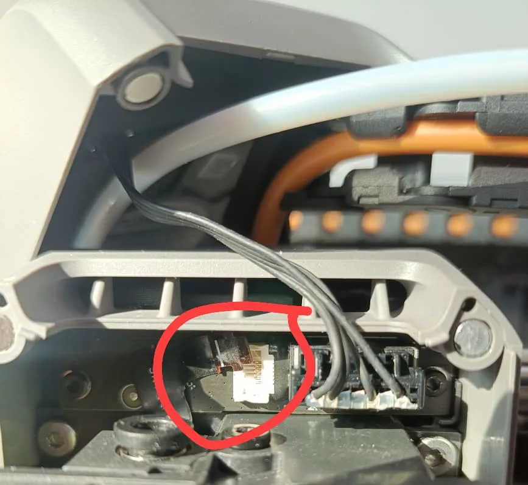
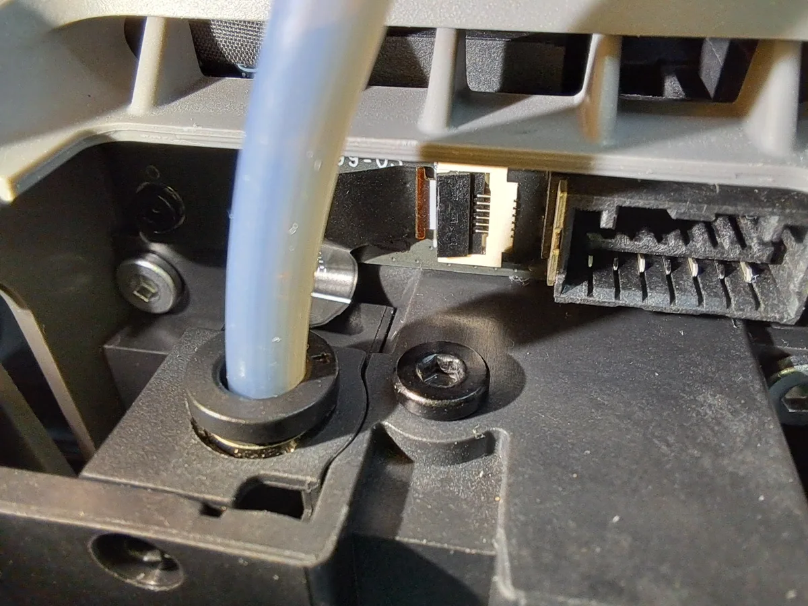
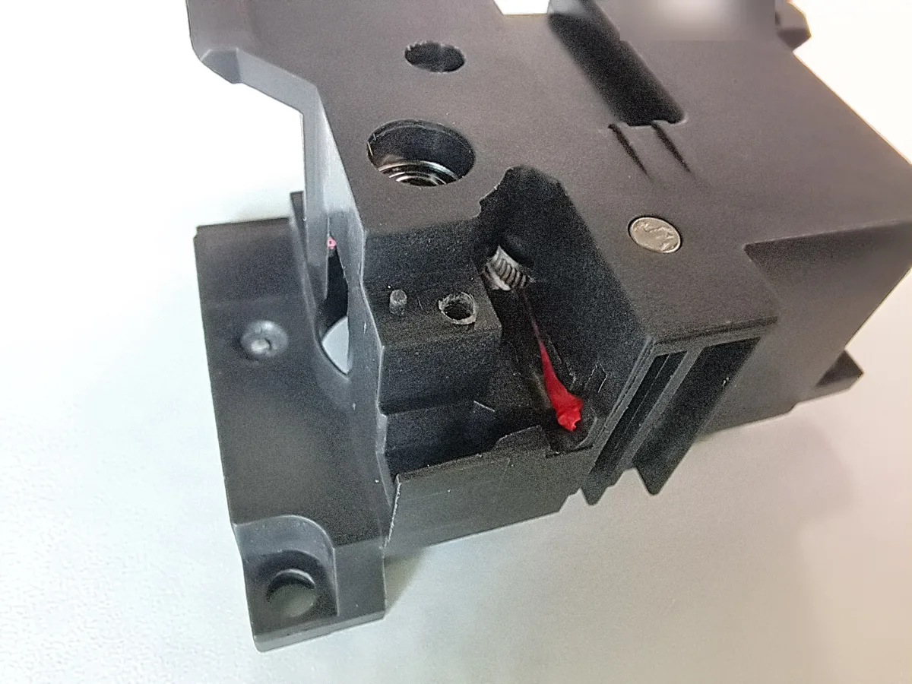
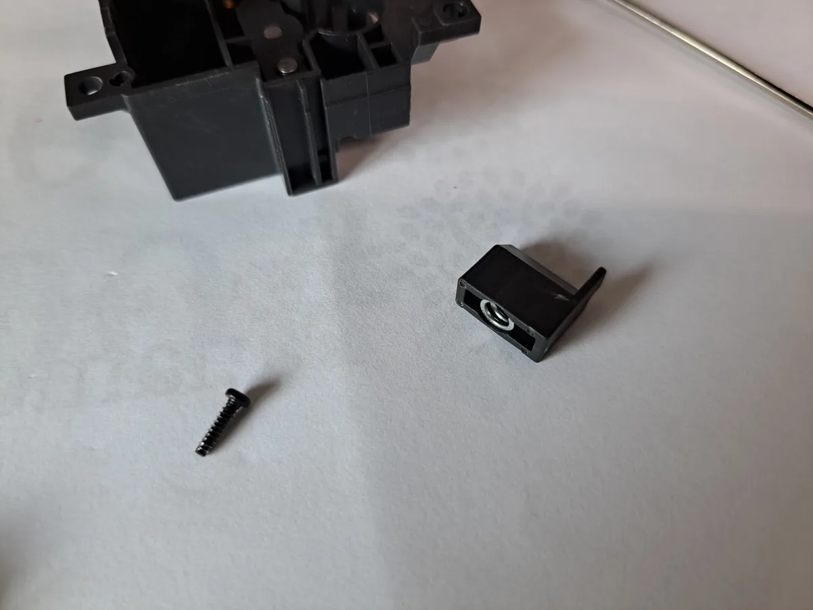
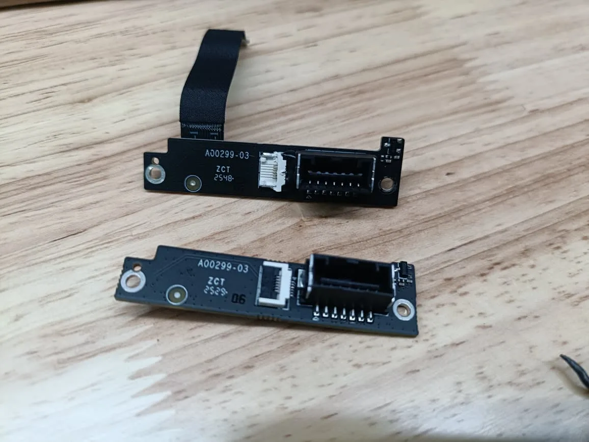
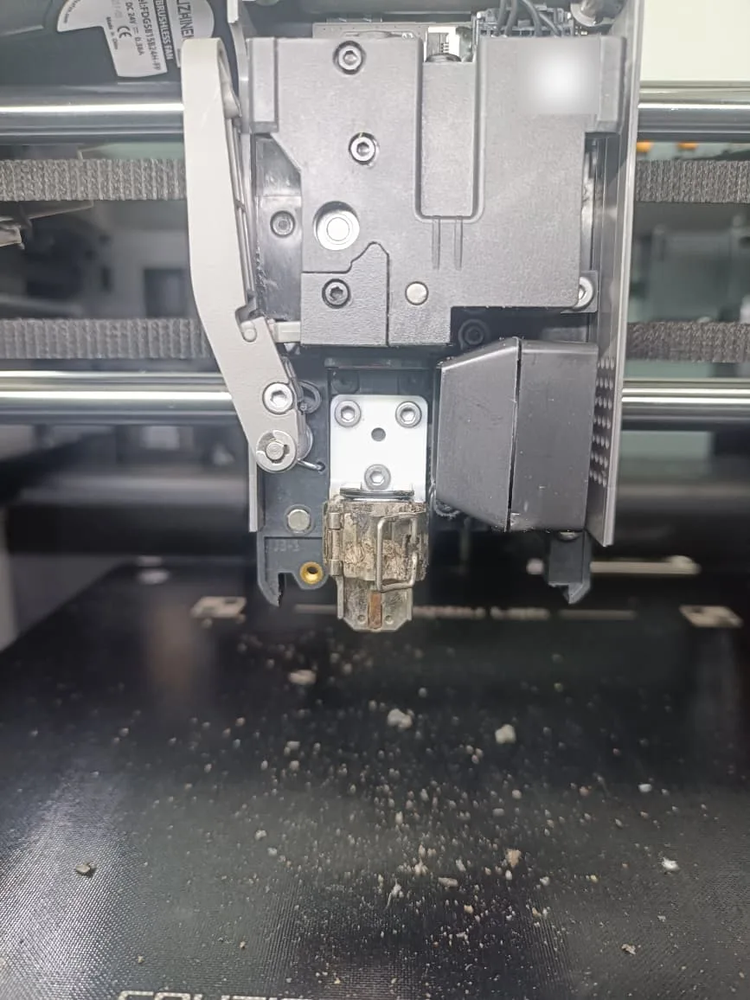

Tu Bambu Lab P2S no extruye: lo que encontramos dentro del cabezal
· Caso del taller
La impresora dice «extrusor atascado», o el aviso raro de que la distancia de corte del cortador de filamento es demasiado grande. Revisas la boquilla, la limpias, y la P2S sigue sin sacar filamento o lo saca a medias. Nos han llegado varias así al taller. Casi nunca era la boquilla. Esto es lo que encontramos al abrir el cabezal, con las fotos de cada caso.

Primero: qué te está diciendo la impresora
La P2S no ve el filamento directamente. Lo sabe por un sensor de filamento dentro del cabezal, por el cortador que corta la punta antes de cada cambio y por un motor que empuja con un par de engranes. Si cualquiera de esas tres cosas falla, la impresora interpreta que el extrusor está atascado, aunque la boquilla esté perfecta.
Por eso limpiar la boquilla a veces no cambia nada. El problema está unos centímetros más arriba, en piezas que no se ven sin quitar la cubierta frontal.
1. El clip del conector del sensor de filamento
Es lo primero que revisamos y el que más se nos repite. El sensor de filamento se conecta a la placa del cabezal con un cable plano de listón, sujeto por un clip pequeño de plástico. Si ese clip se rompe o queda mal cerrado, el contacto falla a ratos. La impresora deja de «sentir» el filamento y te avisa que no entra, o calcula mal cuánto avanzó y salta el error de la distancia de corte.
En una P2S el clip estaba roto y el sensor tenía además una pequeña fisura que hacía falso contacto. En otra, el clip simplemente no estaba bien asegurado. Desde afuera se ve igual en los dos casos. Solo se distingue con el cabezal abierto.


2. El cortador fuera de su lugar
La palanca del cortador baja una cuchilla que corta el filamento antes de cada cambio de color o de carrete. Si la palanca queda mal colocada, la cuchilla no regresa completa y estorba el paso del filamento. En la misma P2S del clip suelto, el cortador también estaba mal acomodado. Lo reacomodamos y probamos. Siguió sin extruir bien, y eso nos llevó a desarmar más.
Es una lección del taller. Cuando una P2S no extruye, casi nunca es una sola cosa. Arreglar lo primero que encuentras y cerrar es la forma más rápida de que regrese.
3. Un pedazo de filamento atorado a la altura del cortador
Al desarmar por completo la unidad de engranes encontramos un trozo de filamento rojo atorado justo en el espacio del cortador. No se ve desde arriba ni desde la boquilla. Ese pedazo frenaba el filamento nuevo, y los engranes, al patinar contra él, lo iban moliendo y se llenaban de recortes.
Si tu P2S hace un clic repetido al intentar extruir, o ves polvo de filamento cerca del cabezal, es muy probable que sea esto.

4. El resorte del bloque de presión sin su tapa
Este fue el hallazgo más curioso. El bloque de presión aprieta el filamento contra el engrane con un resorte, y ese resorte lleva una tapa metálica en el extremo. En esa P2S la tapa no estaba. Sin ella el resorte no aprieta parejo, el filamento queda suelto y el engrane patina.
Para probar imprimimos una tapa provisional, y con ella la impresora volvió a extruir. La pieza impresa se deformó con la presión del resorte en pocas horas, así que la solución real fue cambiar el conjunto de engranes del extrusor con su tapa metálica original. Si alguna vez abriste el extrusor tú, revisa que no se haya quedado esa tapa en la mesa.

5. Cuando la que falla es la placa de conexión o el hotend
En otra P2S el dueño recibió el aviso de extrusor atascado, intentó desarmarla en casa y, al forzar una pieza, rompió la placa de conexión del extrusor. Ahí ya no hubo ajuste posible: tocó cambiar la placa. Con la refacción nueva, el sensor volvió a leer y la impresora imprimió sin problema.
Y una más: una P2S llegó por el sensor de filamento roto. Le cambiamos el sensor y le hicimos limpieza profunda, pero la primera impresión de prueba falló. El hotend venía muy castigado. Al cambiarlo, imprimió sin problemas. Por eso siempre hacemos impresiones de prueba antes de entregar, aunque la falla original ya esté resuelta.


Antes de abrirla tú
Lo que sí puedes probar sin desarmar:
- Descarga y vuelve a cargar el filamento desde la pantalla. Fíjate si el sensor lo detecta al entrar.
- Corta la punta del filamento en diagonal y revisa que no venga doblada o mordida.
- Prueba con otro carrete, de preferencia uno seco. El filamento húmedo también se atora.
- Revisa que la palanca del cortador regrese sola a su posición después de moverla con la mano.
- Si oyes clics al extruir, apaga y no insistas. Cada intento muele más filamento dentro del engrane.
Si nada de eso lo resuelve, el problema ya está dentro del cabezal. En el taller lo abrimos, te mandamos fotos de lo que encontramos y la cotización antes de cambiar cualquier pieza.
Sigue leyendo
¿Tu impresora tiene algo parecido?
Diagnóstico en el taller con fotos de lo que encontramos y la cotización antes de cambiar cualquier pieza. Recibimos impresoras de todo México por paquetería.